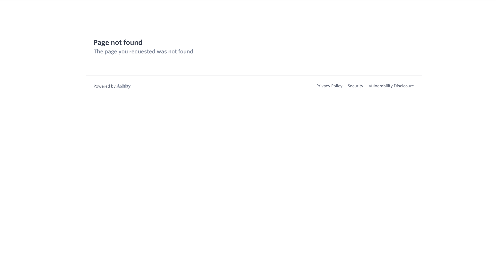

01OBSERVED
Broken links.
The careers link leads to a “Page not found” screen. I would fix that dead end and audit the rest of the website so every important link leads somewhere useful.
See the screenshot & proposed fixGLOBAL REACH × FOUNDER TRUST × STARTUP GROWTH
A practical plan to put Soxton in front of founders around the world through useful startup events, basic legal guidance, consistent content and trusted community partnerships.
MY STARTING POINT
Three priorities I would tackle first: fix the website journey, make content more consistent and build a much bigger presence among startups worldwide.
The careers link leads to a “Page not found” screen. I would fix that dead end and audit the rest of the website so every important link leads somewhere useful.
See the screenshot & proposed fixI see an opportunity for a clearer, more consistent content strategy: one recognizable message, a regular publishing rhythm and useful content built around the questions founders actually ask.
See the content & outreach planSoxton needs a more proactive presence across startup communities worldwide. I would use useful events, LinkedIn content and accelerator partnerships to build visibility across regions, then measure which routes bring qualified conversations.
Explore the startup channelsTHE GLOBAL AMBITION
In 90 days, I would build international visibility, test demand in two regional audiences and create a startup event series that Soxton can repeat.
Launch with a local founder event and existing partner routes. Offer online access so founders beyond the room can join, use the resources and opt into follow-up.
Approach founder communities, university entrepreneurship networks and accelerators in Dublin and London. Test interest from early-stage teams, including founders exploring US expansion.
Share captioned replays, practical checklists and startup-support links. Use registration feedback to choose the next region, time zone and language to test.
Proposed audience pilots. Event guidance will state its jurisdiction; individual legal work follows Soxton’s confirmed service coverage and engagement process.
See the startup event concept01 / THE OPPORTUNITY
My working thesis
The strongest entry point is a founder’s next real task.
Prioritize pre-seed and seed founders approaching a first customer agreement or contractor engagement. Qualify the task, timing, service fit and willingness to pay before treating someone as a lead.
Proposed initial segment; validate through founder interviews.
Rho and Mercury already provide public entry points. Improve their path to a useful first engagement, then test permissioned introductions and small community sessions. [2–4]
Soxton already emphasizes attorney oversight and publishes security and status information. My contribution would be to make those foundations easy to understand during intake, demos and partner conversations. [14–16]
RESEARCH → A FIRST-WEEK DELIVERABLE
A concrete audit surfaced from the public research: compare the partner offer a founder sees with the service and next step they reach.
The public Rho perk advertises waitlist access, a free first month and an attorney consultation. [3]
The main site lists a $1,000 annual membership and pay-as-you-go engagements from $200. Mercury has its own immediate-access page. [1–2]
Confirm the current offer with each owner; align eligibility, pricing, landing copy, intake and attribution. This is a question to verify—not evidence that a partner offer is invalid.
A CONCRETE WEBSITE IMPROVEMENT
I would refine Soxton’s website, starting with the hiring-page issue shown here. A “Page not found” screen interrupts the journey; I would fix the destination and make sure visitors have a clear next step.

01 / Fix the destination.
Trace the link, confirm the intended careers page with the team and replace the broken URL or add the appropriate redirect.
02 / Give visitors a useful next step.
If there are no open roles, show a clear careers message and an approved way to express interest.
03 / Check the whole journey.
Test navigation, calls to action and external links on desktop and mobile, then add a lightweight recurring link check.
Cooley GO → meet the milestone.
Its resources follow company stages and jurisdictions. I would organize entry pages around the task a founder recognizes. [21]
Clerky → show the review process.
Its legal-quality discussion separates a good experience from reliable legal work. My inference: pair approachable demos with explicit attorney ownership and exceptions. [20]
Carta → enable the whole cohort.
Its accelerator model combines education, benefits and relationship support. I would test a repeatable workshop-and-follow-up kit before buying broad exposure. [22]
02 / THE 30–60–90 PLAN
A 30/60/90-day path from market discovery to an international startup event series, with practical resources, consistent content and measurable founder demand.
All volumes and conversion goals are planning hypotheses, not forecasts, benchmarks or reported Soxton results. Recalibrate after baseline discovery and capacity review.
03 / WHERE TO REACH STARTUPS
Ten researched starting routes for the first pilot. Add UK/Ireland community and accelerator prospects during the first 30 days, validating audience fit and existing legal partnerships before outreach.
Showing 10 distribution targets
Look for a real trigger. A new customer, first hire, formation milestone or upcoming financing—not merely “is a startup.”
Confirm service fit. Stage, jurisdiction, matter type, decision-maker, timeframe, current counsel and scope.
Earn a permissioned next step. Partner-led invitation or consented introduction. No harvested community lists or assumed portfolio access.
Record the outcome. Source, stated task, intake status, agreed scope, paid engagement and reasons for a no. Respect partner and service boundaries.
04 / HOW TO ESTABLISH CREDIBILITY
Build on what exists.
Make the evidence useful at the decision point.
A founder should understand who is responsible, what happens next and what the service does with their information before being asked to commit.
Asset: a one-page “your first request” walkthrough and a short synthetic demo.
Validate: service fit → conflicts and engagement where applicable → agreed scope and price → attorney review → delivery and questions. Confirm the real sequence and provider with the team. [17]
Test: can five founders explain the next step and when an attorney becomes involved?
Asset: an approved FAQ: who handles my request, how is AI used, when do I become a client, where do documents go, and what happens if the task is complex?
Validate: actual provider, jurisdictions, retention, model-provider access and deletion practices. Public privacy and terms pages are a starting point, not a substitute for product-specific answers. [17–18]
Test: log unresolved objections and whether the answer helps someone complete appropriate intake.
Asset: a founder-readable trust brief linking security reporting, status information and approved operational answers.
Observed: Soxton’s April 2026 update describes a Vanta-supported SOC 2 process. Confirm the current audit status; do not turn that statement into a certification claim. [14–16]
Test: whether the brief resolves specific objections—not merely whether people open it.
Asset: one permissioned case study with the founder’s task, scope, actual timestamps, human-review role and practical outcome.
Validate: customer consent, metric definitions and any quotation. Define the clock and eligible work before repeating turnaround or savings claims.
Test: whether relevant prospects understand the use case and take a qualified next step. Never invent a customer, endorsement or result.
05 / THE WORK, MADE REAL
I would host an event offering basic legal guidance and useful startup resources, then turn it into a repeatable series for founders across regions. The concept and outreach drafts below are ready for discussion.
Basic legal guidance. Useful startup resources. A clear next step. A proposed New York anchor event with online access for international founders, followed by a second regional session by Day 90.
Proposed first-event goals: 40 registrations → 25 attendees across at least 2 countries → 8 qualified in-scope intakes → 3 paid engagements within 30 days. Confirm speakers, costs, service coverage and capacity before launch.
EVENT TAKEAWAY / FOUNDER RESOURCE PACK
Before your first conversation with counsel, put the business facts in one place:
The event pack would also include a region-labeled directory of startup communities, accelerators, funding information, finance support and approved legal resources. I would verify each link and eligibility requirement before sharing it.
Draft educational content for attorney review. A preparation aid, not a legal analysis or Soxton-approved publication.
FOUR-WEEK GLOBAL CONTENT PLAN
Publish the event invitation and a founder-question prompt. Share with approved US and UK/Ireland community hosts; ask which questions and time zones work best.
Share the preparation checklist and an attorney-reviewed explainer. Publish one practical guide and two short LinkedIn posts, each with a clear event invitation.
Run the Launchpad, send the resource pack to opted-in attendees and publish an approved recap. Offer a captioned replay where recording permissions allow.
Turn recurring questions into an FAQ, share approved clips and invite input on a second regional session. Use audience demand to set its topic and time.
Measure attendance, countries reached, resource use, qualified follow-up and completed engagements by source. Treat the schedule as a proposed operating rhythm.
06 / INTERACTIVE LEGAL WORKFLOW
A small NDA intake work sample, retained from my original concept. It demonstrates how I translate a founder request into structured routing and a clear attorney checkpoint.
TRY A FICTIONAL SCENARIO
Browser-only routing demonstration using fixed rules and fictional scenarios. No model, legal analysis, document upload or connection to Soxton’s systems.
Observed: Soxton documents an MCP workflow for Delaware C-corporation incorporation, registered-agent services and requests to its legal team. Its documentation includes human affirmation and payment review. [19]
My proposed contribution: create a synthetic walkthrough and setup guide; test with 5 technical founders. Track successful setup, complete draft, approval comprehension and support questions. Distinguish a submitted request from an accepted filing. This prototype does not run that integration.
THE OPERATING SCORECARD
Review each cohort weekly, with delivery quality and service economics alongside acquisition. There is no internal Soxton data in this proposal.
| Stage | Definition | Decision it informs |
|---|---|---|
| Qualified need | A founder has an identifiable in-scope task, timeframe and decision-maker. | Is this channel reaching relevant demand? |
| Complete intake | Required facts and documents are available through the approved route. | Where is onboarding creating avoidable friction? |
| First paid engagement | Unique new customer with an agreed scope and recorded payment. | Which sources produce paid activation? |
| Useful delivery | Work delivered within the agreed scope; track response time, rework and attorney minutes. | Can this demand be served reliably? |
| Repeat paid use | Second paid engagement within a defined window among customers old enough to qualify. | Is the first task becoming an ongoing relationship? |
Attribution · Partner + campaign + founder-reported source; deduplicate customers across touchpoints.
Economics · Revenue minus attributable delivery and acquisition costs. Include lawyer time and support effort.
Guardrail · Never scale acquisition faster than the team can provide the agreed service.
WHY I WOULD OWN THIS WORK
I’m Gráinne Popen, a UCD law graduate who has passed all eight FE1 examinations. My experience connects law-firm work, legal technology, founder-facing demos and AI governance.
Legal practice context, including Technology & IP and Litigation & Regulatory experience at DLA Piper.
Startup growth, client communication, demos, onboarding, AI literacy and governance work.
Legal Technologist — Founder Adoption & GTM. Own the connection between international founder demand, useful events and resources, a usable workflow and measurable commercial outcomes, alongside licensed attorneys and engineers.
Experience is candidate-provided. This proposal does not imply employment by Soxton or US attorney admission.
07 / RESEARCH NOTES
Public research reviewed October 19, 2026. Existing relationships, proposed tests and demonstrations are labeled separately. No access to internal conversion, revenue or operational data.